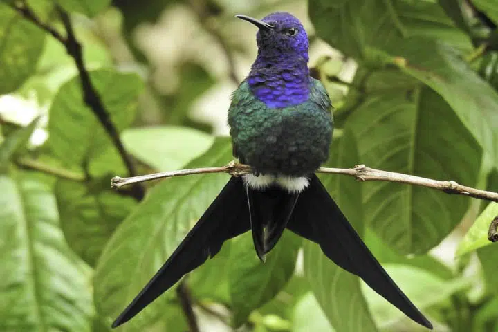
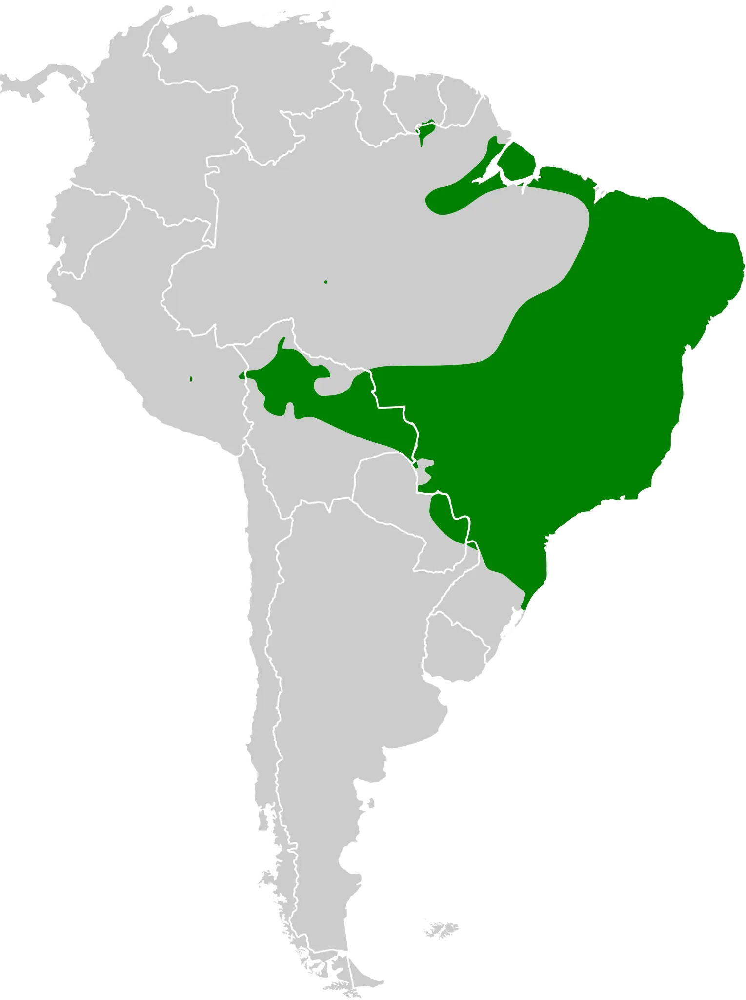

Beija flor tesoura
Nome científico:(Eupetomena macroura Gmelin, 1788)
Nome comum: Beija flor tesoura
Classificação biológica:
Domínio: Eukaryota.
Reino: Animalia.
Filo: Chordata.
Classe: Aves.
Ordem: Apodiformes.
Família: Trochilidae.
Gênero: Eupetomena.
Espécie: Eupetomena macroura.
Nutrição:Nectarívoro e insetívoro.
Hábitos alimentares:Alimenta-se principalmente de néctar de flores, mas também captura pequenos insetos e aranhas, essenciais para suprir suas necessidades proteicas.
Morfologia do corpo:Mede entre 15 a 18 cm de comprimento, sendo que cerca de metade desse comprimento é representado pela cauda bifurcada, característica marcante da espécie. Pesa entre 6 e 8 gramas.
Comportamento:O Beija-flor-tesoura é territorial e usa seu bico longo para se alimentar de néctar e pequenos insetos. Machos defendem vigorosamente seu território e realizam exibições aéreas para atrair fêmeas. Descansam à noite em arbustos densos.
Principais Presas:Pequenos insetos, como moscas e formigas, além de aranhas, que complementam sua dieta à base de néctar.
Principais Predadores:Aves de rapina, serpentes e pequenos mamíferos carnívoros. Estes predadores podem atacar tanto os ovos quanto os filhotes nos ninhos.
Locais habitados
Distribuição: Nos biomas de Mata Atlântica, Cerrado, Pantanal e Amazônia.
Habitat: Florestas tropicais e áreas de vegetação densa.
Reprodução:Constrói ninhos pequenos e bem elaborados, geralmente em árvores ou arbustos, utilizando materiais como teias de aranha e fibras vegetais. A fêmea põe dois ovos, que são incubados por cerca de 15 a 16 dias. Os filhotes são alimentados pela fêmea até aproximadamente 20 dias após a eclosão.